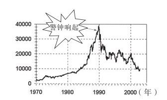
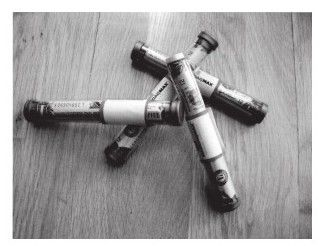
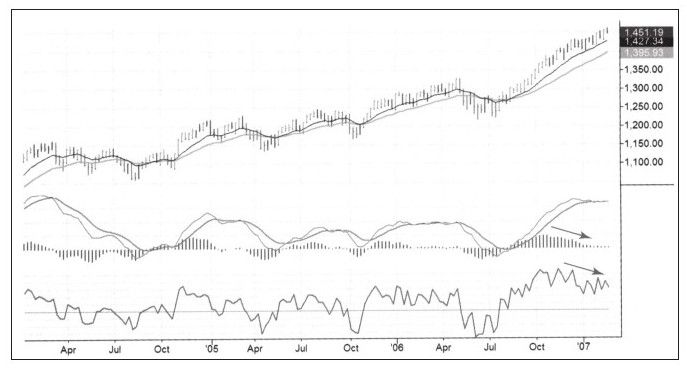
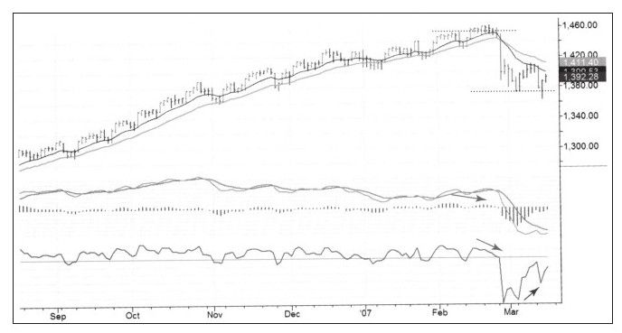

市场走出月牙形态之日就是市场警钟响起之时，这是长期趋势结束的信号。在市场狂躁的时候很难听到警钟，多数人听不到，只有理性的交易者会听到并对此做出反应。
你需要很多经验才能听到市场钟声，另外，在这个信号发出时要做出离场的决定需要更多勇气和自信。你要细心警觉才能听到，因为市场警钟响起的机会非常少，为此你必须眼观六路耳听八方。这不是新手的任务，如果你能听到钟声并开始行动，你就是个严谨的交易者。
我第一次听到市场警钟是在事实发生之后，一次巨大的赚钱机会从我手边溜走，但从此以后它让我对市场更加敏锐了。
1989年我飞往亚洲，波音747头等舱非常舒服。晚餐过后灯熄灭了，大多数乘客都睡了，我没有睡。我和一位日本籍空乘人员攀谈起来。此人大约50岁，他告诉我他是在战后非常困难的环境下长大的，接受教育不多，他付出巨大的努力才得到这家国有航空公司首席空乘的位置，他也对此非常自豪。
聊天时他告诉我，他经常在日本股票市场进出，这个市场已经上涨了近20年。他也告诉我，在股票市场赚的钱比他的薪水还要多，他还打算提前退休。他已经选好了一个太平洋小岛并准备在那里建造自己的别墅，只有一件事情让他不舒服：那些和父母住在一起没有多少家庭负担的办公室女白领赚着更多的钱，享受着更多的收益。
几个月后日经指数彻底崩跌（见图6-14），头一年蒸发了一半市值，但这只是超级熊市的开始。我错过了在接近顶部做空的大好机会，这让我非常深刻地认识到以后再也不能错过这样的心理信号了。

当你识别出一个或一系列事件非常不正常，这种不正常就好像市场规律被废除一样时，就是市场警钟的信号。事实上没人能改变市场规律，即使地心引力也不能。市场泡沫只会短暂停留，造成正常规律不再有效的假象。
如果一个人知道市场下一步该怎么走，就很不正常，这正是那位空乘所为——从股票市场赚的比职业生涯顶峰时期的薪水都要多，一个办公室的小女孩赚得比他还多就更不正常。让业余交易者持续赚钱的市场是不存在的，当门外汉和迟来者开始赚很多钱的时候，市场就离顶部很近了。
当我今天回想起那次谈话时，就像有人走到我面前敲起了警钟——卖出股票并做空！因为当时缺乏经验，所以对警钟声左耳朵进右耳朵出。
伯纳德·巴鲁克是20世纪前半叶非常有名的股票操盘手，他避开了1929年的大崩盘，那次崩盘毁了很多像他一样的作手的财富。他对于如何避免大崩盘是这样描述的：有一天他走出办公室，一位擦鞋工向他推荐了一只股票。巴鲁克意识到这是危险信号——如果最底层的人都开始买股票，社会上就没人不买股票了。他开始卖出股票，在不同的年代不同的经济体下，日本空乘也给过我这样的信号。
还有另外一个心理信号。因为我参加交易展览会已经多年，我注意到股票市场价格高低与主办方能拿出的免费礼物的质量和数量呈强烈的正相关关系，如果市场在顶部，你要准备购物袋把属于你的礼物背走。1987年市场到达顶部的前一个月，芝加哥交易所给客户赠送了上好的太阳镜，镜框上刻着：未来太光明，我们要戴上太阳镜。另一个极端是，如果在市场接近熊市底部的时候去参加展览会，你可能连支圆珠笔都收不到。
在交易展览会上免费礼物的质量和数量反映出市场的情绪，当市场上涨时大众很开心，人们乐于花钱，赞助商也乐此不疲，会拿出更多更好的礼物来。
2007年2月24日我参加一次在纽约举办的交易展览会，因股票市场已经涨了近4年，而且最近没有回调地涨了7个月，所以免费礼物非常丰富。我获得了滑雪帽、壁球帽、一条围巾、一叠T恤衫等其他东西，但最让我期待的礼物是纳斯达克的免费展台（见图6-15）。

周一是假日，我从周二开始大量卖出股票，我的指标整月都显示卖出信号，现在这些免费的东西就好像正响着警钟。上涨趋势已经超过了所有的合理的盈利目标，这些免费礼物表明上涨趋势正在走向疯狂。我卖出了所有的多单头寸并开始做空，我做空了股票和股指期货，同时买入一些指数认沽期权。在那次博览会之后股票又涨了一些，然而没过多久市场崩跌，做空正当时（见图6-16和图6-17）。


市场就像抽水机一样吸干那些没什么准备的大众的钱，并把这些钱注入少数的理性交易者账户中。因为交易存在佣金、滑点、监管费和其他支出等成本，所以交易是个负和游戏。赢家赚的钱少于输家亏的钱，这也是市场中必然存在少量赢家和大量输家的原因。
业余交易者只能从做多也就是上涨趋势中赚钱。在这种单边上涨中赚钱不是赚钱的规则，如果每个人都开始从上涨中赚钱就不正常了。长期来看，大众是必然的输家，只有少数人能赢。当市场警钟响起时，就表明市场已经偏离正常太多，看多的人已经非常多，等待他们的就是暴跌。
如果你是市场中严谨的学生并且思维开阔，迟早能看到或听到这些市场信号。当开始听、思考并依据这些信号行动时，你就不再是一个新手了；当开始依此信号行动时，你会发现自己已经在交易成功者行列中了。